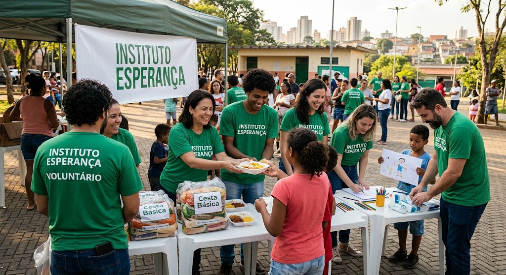

Anos mobilizando pessoas para o bem comum.
Solidariedade que transforma
Juntos, cultivamos novas possibilidades.
O Instituto Esperança conecta pessoas, recursos e oportunidades para fortalecer comunidades em situação de vulnerabilidade.

Nosso propósito
Cuidado que chega onde é mais necessário.
Atuamos com educação, apoio comunitário e geração de oportunidades para construir um futuro mais justo.
Famílias alcançadas por nossas iniciativas.
Voluntários que fazem a transformação acontecer.